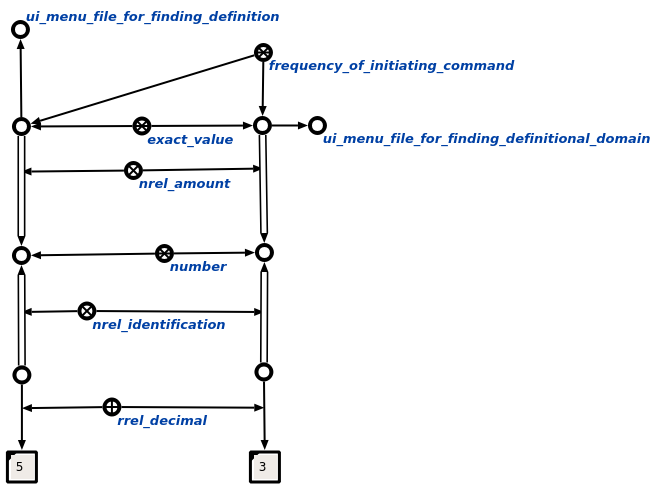

Задачей агента определения частоты инициирования каждой команды является определение числа вызовов каждой команды конкретного пользователя, который является автором данных команд. На вход данному агенту подается знак пользователя. Данный агент инициируется при условии появления в памяти вопросной конструкции, соответствующей действию. определение частоты инициирования каждой команды. Возможные результаты работы агента:
- Если на вход агенту пришел не знак пользователя, то генерируется сообщение об ошибке (Wrong first parameter! It must be user sign(element of ui_user)).
- Если в результате определения числа вызовов каждой команды не было найдено ни одной инициированной команды, то генерируется сообщение "The search hasn't given any results".
- Если определение числа вызовов каждой команды прошло успешно, то будет показана конструкция, содержащая параметр частоты, измеряющий количество вызовов каждой команды пользователя. Пример результата работы агента представлен на рисунке.
